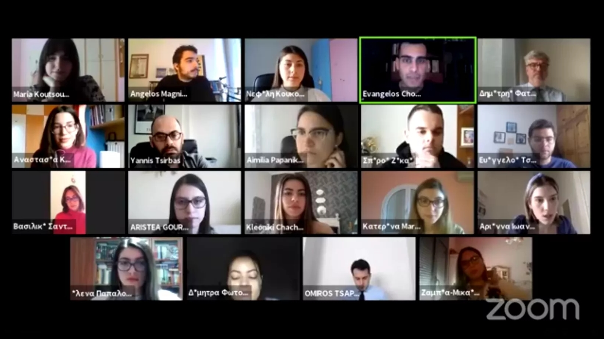

Το Σάββατο 13/03 και ώρα 11:30 π.μ. έλαβε χώρα η εκδήλωση του WeSolve με τίτλο Career

Day Πολιτικού Τμήματος ΕΚΠΑ: «Προοπτικές, Διαδρομές, Πορείες», η οποία διεξήχθη μέσω της πλατφόρμας Zoom. Την εκδήλωση παρακολούθησαν φοιτητές και απόφοιτοι του τμήματος Πολιτικής Επιστήμης και Δημόσιας Διοίκησης του Εθνικού & Καποδιστριακού Πανεπιστημίου Αθηνών, καθώς και άλλων σχολών με παρεμφερές αντικείμενο σπουδών, ακόμη δε και μαθητές που ενδιαφέρονται να ακολουθήσουν σχετική ακαδημαϊκή πορεία. Κατά την έναρξη έγινε μια σύντομη εισαγωγική παρουσίαση του WeSolve, ενός think tank που δημιουργήθηκε από φοιτητές της Νομικής του ΕΚΠΑ με όραμα ένα καλύτερο Ελληνικό Πανεπιστήμιο με ίσες ευκαιρίες και δυνατότητες για όλους.
Δελτίο τύπου Career DaysΑκολούθως, έλαβε χώρα μια ιδιαίτερα ζωντανή και εποικοδομητική συζήτηση, με κεντρικό πυρήνα τις τοποθετήσεις των προσκεκλημένων ομιλητών μας, οι οποίοι όντας οι ίδιοι απόφοιτοι του τμήματος, μοιράστηκαν την προσωπική τους εμπειρία από την φοίτηση τους σε αυτό, την επαγγελματική τους σταδιοδρομία και εξέλιξη, καθώς και τις επαγγελματικές προοπτικές που μπορεί κάθε φοιτητής/φοιτήτρια να αποκομίσει από το εν λόγω τμήμα, λαμβάνοντας υπόψιν και τις τρεις διαφορετικές κατευθύνσεις του προγράμματος σπουδών του τελευταίου.
Αρχικά τον λόγο πήρε ο κος Όμηρος Τσάπαλος, Σύμβουλος Στρατηγικής και Επικοινωνίας, ο οποίος αναφέρθηκε στο ζήτημα της ένταξης των αποφοίτων στην αγορά εργασίας στον ιδιωτικό τομέα και στις προοπτικές αυτού, καθώς και στο ζήτημα των μεταπτυχιακών. Ο κος Τσάπαλος δε δίστασε να εκθέσει με ειλικρίνεια τις δυσκολίες τόσο της φοίτησης στο εν λόγω τμήμα, όσο και της μετέπειτα επαγγελματικής αποκατάστασης, όμως δεν παρέλειψε να μεταφέρει και ελπιδοφόρα μηνύματα στους νεαρούς φοιτητές, τονίζοντας ότι αν εκείνοι μένουν διαρκώς ενημερωμένοι, καλλιεργήσουν ενσυναίσθηση, εστιάσουν στα θετικά στοιχεία της σχολής τους και τα αξιοποιήσουν, βρουν την εξειδίκευση που περισσότερο τους γοητεύει και αφοσιωθούν σε αυτήν, μπορούν όχι μόνο να ασκήσουν αξιοπρεπώς την επιστήμη τους, αλλά και να ανελιχθούν, αψηφώντας το απανταχού παρόν σήμερα αρνητικό φαινόμενο της ανεργίας.
Στη συνέχεια, ακολούθησε η τοποθέτηση του κ. Γιάννη Τσίρμπα, Επίκουρου Καθηγητή Πολιτικής Επιστήμης με έμφαση στις μεθόδους κοινωνικής και πολιτικής έρευνας και Διευθυντή του Εργαστηρίου Ελληνικής Πολιτικής (Τμήματος ΠΕΔΔ ΕΚΠΑ), ο οποίος εξήρε τη σημασία του πάθους για το αντικείμενο, καθώς και την αναγκαιότητα της ανάπτυξης soft skills (τα οποία τείνουν να θεωρούνται σήμερα εξίσου σημαντικά με τα hard skills), προκειμένου να ανταπεξέλθει ο νεαρός επιστήμονας στις προπτυχιακές σπουδές, στα μεταπτυχιακά προγράμματα, αλλά και αργότερα στην διαδικασία ένταξής του στην αγορά εργασίας. Ακόμη, ο κος Τσίρμπας έκανε μνεία σε ανερχόμενους επιστημονικούς κλάδους-επαγγελματικές διεξόδους, όπως η τεχνητή νοημοσύνη, τα big data τα οποία κατά κόρον χρησιμοποιούνται σήμερα στην έρευνα μέσω social media, καθώς και στη σημασία της διαμόρφωσης και υιοθέτησης μιας σαφούς και στέρεας ηθικής δεοντολογίας, ενός οδηγού ηθικών αρχών που είναι σκόπιμο να συνοδεύει κάθε επιστήμονα.
Τρίτος πήρε το λόγο ο Δρ. Κωνσταντίνος Παπαδημητρίου, Στέλεχος Υπουργείου Εσωτερικών και Πρόεδρος ΔΣ του Διοικητικού Επιμελητηρίου, ο οποίος παρουσίασε χρήσιμες πληροφορίες για τον ρόλο και τη λειτουργία της Εθνικής Σχολής Δημόσιας Διοίκησης και για την εσωτερική διάρθρωση του Δημόσιου Τομέα εν γένει, κατατοπίζοντας εναργώς τους ανερχόμενους φοιτητές σχετικά με τις επαγγελματικές ευκαιρίες που αυτός παρέχει.
Στη συνέχεια, ακολούθησε η ομιλία του κ. Δημήτρη Φατούρου, Υπεύθυνου Επικοινωνίας για την Ελλάδα και την Κύπρο στο Περιφερειακό Κέντρο Πληροφόρησης του ΟΗΕ στις Βρυξέλλες, ο οποίος μίλησε για τη σταδιοδρομία στους διεθνείς οργανισμούς και ιδιαίτερα για την πρόσβαση και την επαγγελματική ανέλιξη στον ΟΗΕ (θέσεις εθελοντικής εργασίας, αμειβόμενης πρακτικής άσκησης κ.ά.). Ο κος Φατούρος τόνισε την πολυπολιτισμική ταυτότητα που διέπει τα όργανα των Ηνωμένων Εθνών. Έπειτα, δε δίστασε να μοιραστεί με τους φοιτητές τα προσωπικά του βιώματα, τα εμπόδια που αντιμετώπισε, τα ρίσκα που κλήθηκε να λάβει, προκειμένου να βρεθεί νεαρός ακόμη στις Βρυξέλλες, και από εκεί στα ΗΕ, εμπλουτίζοντας τη συζήτηση με μια ιδιαίτερα ζωντανή αφήγηση.

Τέλος, ακολούθησε η τοποθέτηση του Δημήτρη Ν. Χρυσοχόου, Καθηγητή Θεωρίας και Θεσμών της Ευρωπαϊκής Ολοκλήρωσης (Τμήματος ΠΕΔΔ ΕΚΠΑ), Honorary University Fellow στο Πανεπιστήμιο Έξετερ και Ερευνητικού Εταίρου στο Ευρωπαϊκό Κέντρο Αριστείας Jean Monnet Πανεπιστήμιο Πελοποννήσου, ο οποίος έχοντας ως γνώμονα τη δική του εμπειρία έδωσε χρήσιμες συμβουλές για την προσέγγιση της Ακαδημαϊκής πορείας και καριέρας. Ο κος Χρυσοχόος ανέλυσε τη σημασία του διδακτορικού διπλώματος, της συγγραφής επιστημονικών έργων και της δημοσιοποίησής τους, καθώς και της μεταδιδακτορικής έρευνας, υπογραμμίζοντας ότι για εκείνον η έρευνα -ως ορόσημο για την πορεία ενός επιστήμονα- εξελίσσεται εις το διηνεκές.
Μετά το πέρας της εκδήλωσης, δόθηκε η ευκαιρία στους συμμετέχοντες να θέσουν ερωτήματα στους ομιλητές, τα οποία είχαν καταγράψει κατά την διάρκεια των επιμέρους παρουσιάσεων. Διαπιστώθηκε έντονο ενδιαφέρον σχετικά με την επαγγελματική αποκατάσταση, και εν γένει τις δυνατότητες που διανοίγονται στους αποφοίτους του τμήματος Πολιτικής Επιστήμης και Δημόσιας Διοίκησης σε Ελλάδα και εξωτερικό. Οι ομιλητές ήταν πρόθυμοι για περαιτέρω συζήτηση επ’ αφορμής των ερωτήσεων και μάλιστα ορισμένοι από εκείνους έδωσαν και τα προσωπικά τους στοιχεία στους ακροατές, ούτως ώστε οι τελευταίοι να επιδιώξουν κατ’ ιδίαν επικοινωνία για οιαδήποτε απορία. Η ανταπόκριση των φοιτητών για ακόμη μία φορά στο εγχείρημά μας υπήρξε καθοριστική και χάρη στην ουσιώδη και εποικοδομητική αλληλεπίδραση ομιλητών και κοινού, άλλη μία εκδήλωση του WeSolve στέφθηκε με επιτυχία.
Ευχαριστούμε θερμά όλους, όσοι έδωσαν το παρόν, ομιλητές και ακροατές, για την έμπρακτη στήριξή τους και ευχόμαστε να τους έχουμε ξανά κοντά μας στις επόμενες δράσεις μας.